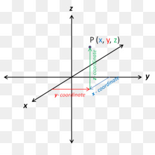
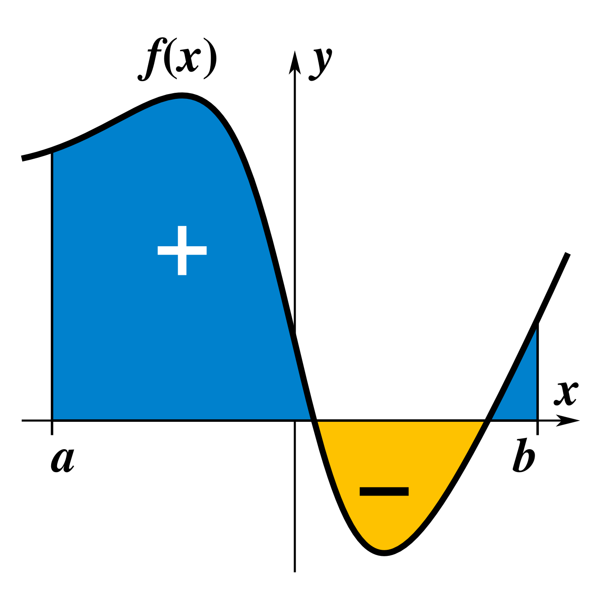
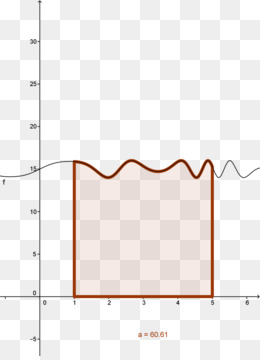

Un espacio es de n dimensiones, cuando para determinar cada uno de sus
puntos hacen falta los valores de n parámetros llamados Coordenadas del
Punto y que se representan por X1, X2, ..... Xn
ESPACIO AFIN
Espacio AFIN de n dimensiones es el espacio entre cuyos puntos y los conjuntos de
n números reales cualesquiera X1, X2, ..... Xn llamados coordenadas del punto, se
puede establecer una correspondencia biunívoca.
ESPACIO METRICO
Es un Espacio AFIN en el cual se introduce la manera de medir la distancia
entre dos puntos cualesquiera del mismo.
ESPACIO EUCLIDIANO
Un Espacio es EUCLIDIANO y de dimensión n cuando :
1.- Es AFIN de dimensión n
2.- La distancia entre dos puntos cualesquiera del mismo está definida por :


i=n
i=1
2
i i
2
d = (X' - X )
Llamando d (A,B) a la distancia entre los puntos A y B del E2
se verifica que :
1) d (A,B) = 0 A = B
2) d (A,B) = d (B,A)
3) d (A,C) + d (C,B) ≥ d (A,B)
El espacio Euclidiano de n dimensiones se simboliza con En
CONJUNTOS PUNTUALES EN E2
Disco abierto de centro A(a,b) y radio "r"
Es el conjunto de puntos del E2 tal que :
S = {P(x,y) / (x-a)2
+ (y-b)2
< r2 }
o sea la d (P,A) < r
En el caso que sea menor o igual a r se tiene el disco cerrado
Intervalo rectangular abierto
Es el conjunto de puntos P(x,y) perteneciente al E2 tal que
S = {P(x,y)/ a < x < b ^ c < y < d }
En el caso de menor o igual se tiene el intervalo rectangular cerrado
Entorno circular
Entorno circular del punto A(a,b) y radio r es el disco abierto de radio r y centro
A(a,b) es decir es el conjunto de puntos del E2 / S = { P(x,y) / (x-a)2
+ (y-b)2
< r2 }
o sea la d(P,A) < r . Se simboliza con N (A,r)
Entorno circular reducido
Entorno circular reducido del punto A(a,b) y radio r es el disco abierto de radio r
y centro A(a,b) excluyendo el punto A(a,b), es decir es el conjunto de puntos del
E
2 tal que : S = { P(x,y) / 0 < (x-a)2
+ (y-b)2
< r2 } o sea la 0 < d(P,A) < r
Se simboliza con N' (A,r)
Entorno rectangular
Entorno rectangular del punto A(a,b) y semiamplitud "d" es el conjunto de
puntos P(x,y) del E2
tales que verifiquen :
| x - a | < d
| y - b | < d
Entorno rectangular reducido
Es el mismo que el anterior pero excluyendo el punto A(a,b) es decir es el conjunto
de puntos P(x,y) del E2 tales que
0 < | x - a | < d
0 < | y - b | < d
CLASIFICACION DE PUNTOS
Punto aislado
Un punto de un conjunto se llama aislado cuando hay algún entorno suyo que no
contiene otros puntos del conjunto que el mismo.
Por ejemplo si llamamos Z al conjunto de los números enteros, el conjunto
definido por : S = { P(x,y) / x Z ^ y Z } está formado solamente por puntos
aislados
Punto de acumulación
Un punto pertenezca o no a un conjunto S, se llama punto de acumulación de S,
cuando en todo entorno reducido suyo hay puntos del conjunto S.
Si definimos a S = { P(x,y) / (x)2 + (y)2
< 1 }
X
Y
c
d
a b
3

Todos los puntos de S son de acumulación y los de la circunferencia
(x)2 + (y)2
= 1 también, ya que si bien no pertenecen a S en todo entorno suyo hay
puntos que pertenecen a S
Punto interior
Un punto perteneciente a un conjunto S se llama "punto interior" de S cuando hay
por lo menos un entorno suyo, cuyos puntos todos pertenecen a S.
Interior de un conjunto
Es el conjunto formado por todos los puntos interiores del conjunto
Punto exterior
Un punto no perteneciente a un conjunto S se llama "punto exterior" de S cuando
hay por lo menos un entorno suyo, cuyos puntos ninguno pertenecen a S
Exterior de un conjunto
Es el conjunto formado por todos los puntos exteriores del conjunto
Punto frontera
Un punto pertenezca o no a un conjunto S, se llama frontera de S si no es
exterior ni interior a S, es decir, en todo entorno suyo, hay puntos que
pertenecen a S y puntos que no pertenecen a S.
Si definimos a S = { P(x,y) / (x)2 + (y)2
< 1 }
Los puntos de la circunferencia (x)2 + (y)2
= 1 son puntos frontera de S ya que en
todo entorno suyo hay puntos que pertenecen a S y puntos que no pertenecen a S.
Frontera de un conjunto
Es el conjunto formado por todos los puntos fronteras del conjunto
Contorno de un conjunto
Es el conjunto de los puntos no exteriores que son puntos de acumulación de
puntos exteriores
Si definimos a S = { P(x,y) / (x)2 + (y)2
< 1 ^ y # 0 }
La frontera es la circunferencia (x)2 + (y)2
= 1 con y = 0 mientras que el contorno
es solamente (x)2 + (y)2
= 1
Arco de curva simple de Jordan
Una curva es una función de un solo parámetro
x = x (t)
y = y (t) (relaciones paramétricas de una curva)
Los puntos de la curva se obtienen dando valores al parámetro t
En este caso, definimos que a < t < b